GeoZL codecs
- GeoZL 0.31.0, 17 codecs, BSD-3-Clause licence.
zstd and Deflate on their own treat a raster as a line of bytes. They do not use pixel neighbours, the −32768 no-data value, or the slowly changing high byte of a 16-bit elevation. Blosc gets part of the way with byte shuffle and bitshuffle, which group the high bytes together, but it still knows nothing of neighbours in two dimensions or of no-data. GeoZL adds small codecs for these raster properties. GeoZL supplies these codecs to OpenZL, a compression framework built from graphs of codecs.
The figure follows one row of an elevation tile through a graph. Use the buttons or arrow keys to follow each codec.

Each frame stores its graph as a decode recipe. A reader looks up the codecs by CTid. A shipped CTid is never renumbered or reused.
Graphs can vary between frames. A DEM and a land cover map can use different graphs. They can also vary by band, season or location, including ocean, mountain and city tiles. Frames for a training loop can use a GPU recipe.
A recipe names the graph in data-flow order. The first code line builds the graph shown above.
g = geozl.graph(tile, "planar>zigzag>transpose>entropy", nodata=-32768)
frame = geozl.compress(tile, graph=g)
out = geozl.decompress(frame).view(tile.dtype).reshape(tile.shape)nodata= adds the first step, and error= would add a quantizer right after it. decompress returns bytes. The frame stores neither dtype nor shape, so retain both separately. geozl.profile tries candidate recipes on a tile and ranks them.
All GeoZL codecs fit into this chain. The map places all seventeen codecs beside the OpenZL codecs they work with.
![The seventeen GeoZL codecs by where they sit in a graph. Split, nodata and deinterleave. Quantize, quant_linear, quant_log and quant_sqrt. Predict, delta_w, delta_n, planar, med, average and wp_static. Code, pfor and lanes, next to OpenZL's zigzag, transpose, entropy and zstd. Fused codecs run several steps in one pass. planar_zigzag and med_zigzag predict and zigzag and still need a code step after them, planar_zigzag_pfor and planar_zigzag_lanes code as well. pfor, lanes and the two fused codecs ending in them also decode on the GPU.](assets/svg/codecs-light/geozl-map.svg?v=2)
The four codec families are on separate pages. Predictors turn samples into small residuals. Stream codecs split and pack. Fused codecs run a common chain in one pass, and planar>zigzag in the picture above is really one of them. Quantizers trade a bounded error for smaller numbers. Each codec ends with its CTid, its header and the call that builds it.
Two algorithm pages follow the families. PFOR and PivCo are the coders behind the GPU recipes, explained from the block format up.
The optimization pages come last, as a series in four parts that tells how the decoders got fast. Fast on one core covers SIMD on a CPU. What a GPU wants explains which formats a GPU can decode and what that cost, Bytes to tensors follows a batch into GPU memory, and One source, many GPUs shows how one Slang source becomes the kernels for each backend.
The API section documents the calls in every language.